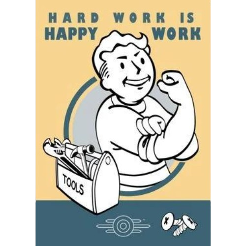

Invista no futuro de sua família!
Invista no futuro de sua família!
Bem-vindo ao Refúgio Perfeito da Vault-Tec: O Seu Santuário no Pós-Apocalipse!
Você está pronto para garantir não apenas sua sobrevivência, mas também o seu estilo de vida no mundo pós-apocalíptico? Na Vault-Tec, estamos comprometidos em oferecer mais do que apenas segurança física - estamos construindo comunidades vibrantes e prósperas onde você e sua família podem não apenas sobreviver, mas prosperar.

Ao adquirir uma vaga em nosso Vault, você está se tornando parte de uma comunidade unida, onde cada membro é valorizado e contribui para o bem-estar geral. A seguir você verá apenas alguns dos benefícios que você pode esperar ao se juntar a nós.
Em nosso Vault, você não apenas terá uma vaga para se abrigar, mas também sua própria casa, um refúgio para chamar de lar, projetado com o conforto e a segurança em mente.
Desfrute de água filtrada livre de radiação e suprimentos alimentares para mais de 1000 anos, garantindo que você e sua família tenham tudo o que precisam para se sustentar durante qualquer crise.
Com áreas dedicadas para plantio, você terá a oportunidade de cultivar seus próprios alimentos frescos, mantendo um estilo de vida saudável e sustentável mesmo em um mundo pós-apocalíptico.
Nossa comunidade oferece uma variedade de atividades recreativas para todos os membros, desde espaços de lazer até áreas de educação, garantindo que haja sempre algo para ocupar o seu tempo e expandir seus horizontes.
Não apenas sobrevivemos juntos, mas também prosperamos juntos. Com oportunidades de trabalho para os adultos e uma escola dedicada para as crianças, estamos comprometidos em manter vivo o estilo de vida americano, mesmo em tempos desafiadores.
Na Vault-Tec, acreditamos que o futuro pertence àqueles que se preparam para ele. Ao garantir sua vaga em nosso Vault, você está fazendo mais do que simplesmente se proteger - você está investindo em um futuro seguro e promissor para você e sua família.
Junte-se a nós na Vault-Tec e embarque em uma jornada rumo à segurança, comunidade e prosperidade no mundo pós-apocalíptico. Reserve agora sua vaga e dê o primeiro passo em direção a um futuro brilhante, mantendo vivo o estilo de vida americano que tanto valorizamos.